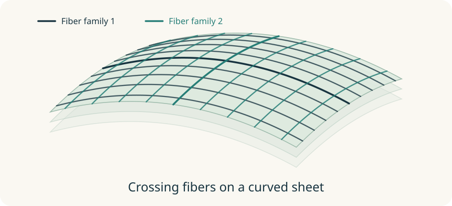

01
Sheets q
Can nearby fiber-direction pairs fit together into a sheet?
Two directions define a local plane. Sheets asks how consistently that plane field can join across a neighborhood. q measures departure from this consistency, in mm⁻¹.
Lower q means less departure. It does not establish an anatomical sheet. Pairs 12, 13 and 23 are kept separately; pair 12 is primary, never a lowest-q winner.
